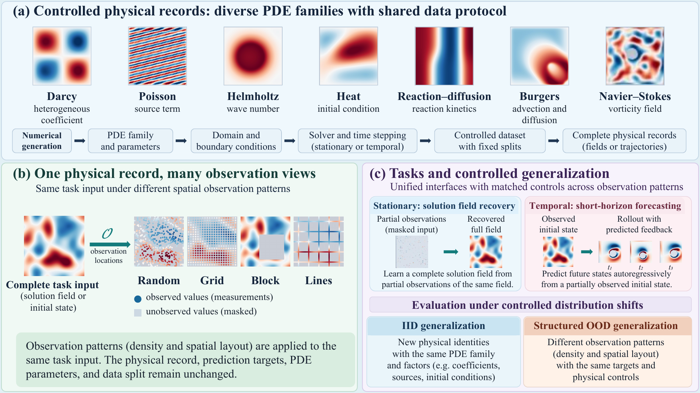
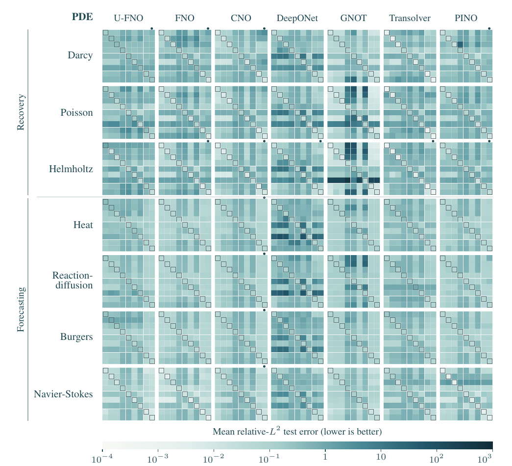
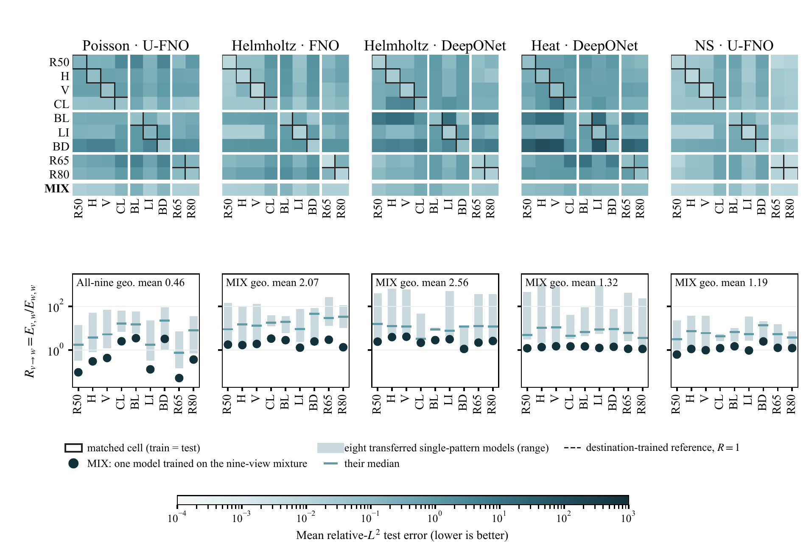

Open benchmark · Public preprint · September 2026
PDE-OBS
Controlled Evaluation Across
Observation Patterns
The same physical field. Different observations.
A common protocol for measuring what changes.
1 Stony Brook University2 University of California, Davis3 TikTok4 PayPal5 New York University
* Corresponding authors: Ruichen Xu and Yuefan Deng
Public preprint available below. arXiv submission is being prepared; no arXiv identifier has been assigned.
01 / The benchmark
Separate the field
from how it is observed.
PDE-OBS evaluates reconstruction and short-horizon forecasting when measurement layouts and observation densities change. The physical record, prediction target, and train/test split stay fixed while the observation operator varies.
The released corpus contains 560,000 numerical fields and trajectories. The paper evaluates a 14,000-record subset: 1,800 training and 200 test records per PDE. These are different populations, not interchangeable sample counts.

Stationary recovery
Darcy · Poisson · Helmholtz
Partial solution → complete solution fieldShort-horizon forecasting
Heat · Reaction–diffusion · Burgers · Navier–Stokes
Partial initial field → three future frames; Navier–Stokes target is vorticity02 / Complete results
Observation transfer is part of the evaluation.
Not a footnote.
Cross-pattern error exceeds matched-pattern error.
Every PDE–method pair has C > D. D averages the nine matched cells; C averages the 72 off-diagonal cells.
Median C/D across the complete grid.
Paired test-identity bootstrap interval: [10.07, 10.71]. In the fixed 13-pair, 117-model configuration-matched subset: 10.74× [10.44, 11.12].
More observations do not guarantee a smaller error.
Layout and density responses depend on the trained model. Heterogeneous training histories make this a descriptive benchmark, not a controlled architecture ranking.
Each cell contains 200 test records. Cell-level mean ± sample SD, full-precision errors, training histories and all adverse finite outcomes are retained. Bootstrap intervals describe test-identity uncertainty, not training-seed uncertainty.
Explore the complete result files

03 / A separate training control
What if training sees
multiple patterns?
Five completed mixed-pattern models reduce large single-pattern transfer errors. Across their 45 reference-view blocks, MIX is below the median transferred specialist in 45/45 cases and below the best transferred specialist in 34/45.
This does not establish universal superiority to destination-trained references or isolate heterogeneous training budgets. The Poisson recipe-matched subset is reported separately.

04 / Open resources
Inspect the evidence.
Build on the benchmark.
Code & documentation
Generation, observation operators, model interfaces, frozen protocols, tests and strict scoring.
02Numerical data
560,000 records across 7 PDEs, 4 boundary protocols and 10 constructions. Separate manifests identify the evaluated slice and full corpus.
03Trained checkpoints
441 released weights-only checkpoints with training metadata and digest bindings. Weights-only releases are for inference, not exact training continuation.
Start with the interface.
Installation and help do not start training or download the corpus. Follow the documented, separately budgeted workflows when you are ready.
Installation guidegit clone https://github.com/ru1ch3n/PDE-OBS.git
cd PDE-OBS
python -m venv .venv
# Activate the environment for your shell.
python -m pip install .
pdeobs --help